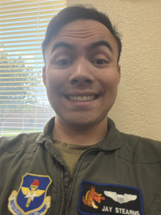
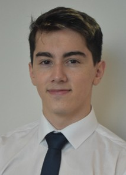
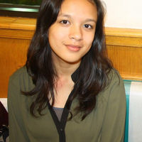
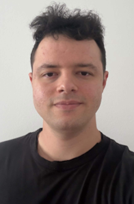
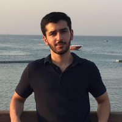
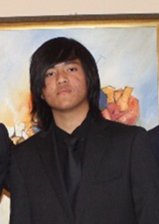

Hear it from them

"I instruct people with minimal aviation experience and train them to be qualified pilots in a short amount of time. I attended REC for 3 years and it still contributes to the study habits that are required to be a current and knowledgeable pilot. There is a lot of knowledge needed to understand the aircraft you fly and all the rules and regulations with that, and REC taught me foundational study habits that I still use today. My overall experience was amazing in both a personal and educational way. Ms Rifqa inspired us to achieve our highest potential."

"After I learned that my friend's daughter went to REC, my oldest son was in need of tuition for his GCSEs. After a success with him, I signed up my two other children. Miss Rifka has been a great teacher for all my kids."
"REC gave me really strong maths foundations and boosted my English and social skills. Mrs. Rifka gives closer attention than a regular school environment, so was able to hone in on where I struggled and push me to make improvements exactly where I needed it. REC had a really fun learning environment that I enjoyed attending and felt strong benefits to my grades and understanding. The library was something that I loved and spent a lot of time in, and was grateful to have access to."
"My son Hisham (Yr 9) and daughter Hafsa (Yr 8) have been learning at REC since September 2015, and already we are witnessing a marked academic improvement in both. Ms Rifka is a very talented teacher who puts the students at ease and enables learning to take place. The holistic learning experience she offers is specific and personalised to the child — and she makes extra effort to keep parents informed, a rare thing for a tutorial centre and what sets her apart."
"I work in maintenance of 17 C130J Aircraft and lead a maintenance team of 80 personnel. I attended REC during my A-Levels for 2 years. REC helped me build healthy study habits and academic discipline, which has provided a strong foundation for lifelong learning that has supported my success in both education and my career as a young professional learning their trade. Overall a great experience — a welcoming and positive learning environment that made classes engaging and enjoyable. Ms Rifqa's encouragement and dedication helped make REC a place where students felt supported and motivated to succeed."
"Miss Rifka not only cares about our learning and progress — she cares about each and every one of her students. Her constant motivation and exceptional teaching methods have driven me down the path to success. I can't thank her enough."

"I do hacking for all kinds of companies, including breaking into them physically. Although pretty much all of my work is based on my CS knowledge, REC genuinely did help me a lot. It was the best way for me to reliably put a dent in further maths, and she is a great teacher. Also the community aspect, where you can genuinely study with the homies without it feeling like a chore. There is no other place like REC where you can study well and have a great time with friends."

"Mrs Rifka has been incredibly helpful in building my technique in understanding English and Sciences. She's been so kind and supportive — but also stern when she needs to be — both academically and emotionally, and I wouldn't be where I am without her!"

"My role involves developing mechanical components using CAD software for Aerospace and Defence companies. REC provided a positive and supportive learning experience that had a lasting impact on my academic journey. The centre had a friendly and welcoming atmosphere where Ms Rifqa and other students were always approachable and willing to help. It was an environment that encouraged studying, collaboration and learning from one another. I attended REC for around 4 years, studying Maths, Chemistry and Physics. The structured teaching, clear explanations and exam-focused preparation gave me a much better understanding and improved my confidence going into exams — helping me achieve stronger GCSE and A-Level results, complete my Mechanical Engineering degree and begin my working career."

"REC is a means to fulfil a student's full potential. The work, time and effort put into producing such high-quality classes enables students to not only understand the content being taught but to also learn to enjoy it."

"REC helps accelerate curriculum completion — more often than not it is ahead of the school's academic calendar. It helps people who want to succeed and aim for high results quickly. Granted, effort is required from our end, but REC is the place if you want to be ahead of the curve with closer personal guidance than teachers in schools. REC has a very good learning environment with like-minded individuals; teachers are kind and always there to lend a helping hand if we struggle with anything. We also get access to tips and tricks for certain questions that we won't get in schools. I also got to make friends with a lot of smart people, which is a great bonus."
"Three of my children attended REC during their secondary school years and have enjoyed the learning atmosphere, excellent guidance and tuition. REC has a distinct family feeling where you feel welcome, and the children enjoy revising for their exams. We particularly enjoyed the extra-curricular activities — the end-of-year celebration, sports day and spelling bee. Our children have achieved their potential with the help of REC. I would whole-heartedly recommend it to friends and families."

"Over the last few years REC has become a second home to me. The endless hours Ms Rifka puts in for each of her students has clearly benefitted us all immensely!"
"I follow the quote: 'Work while you work, play while you play', said by the wonderful Mrs. Rifka. This has led me to strive and continue to achieve great things."
"There are many education centres in Doha, but this one stands out. It is not merely an education centre, but a place where the students and even the parents feel part of something special. Students are encouraged to try harder, be better, never settle for less, and to challenge themselves to go the extra mile. That is the place Ms Rifka Saleem creates through her hard work and unfailing dedication."
Book a free assessment and discover how REC can help your child achieve their full potential.
CR No. 63429